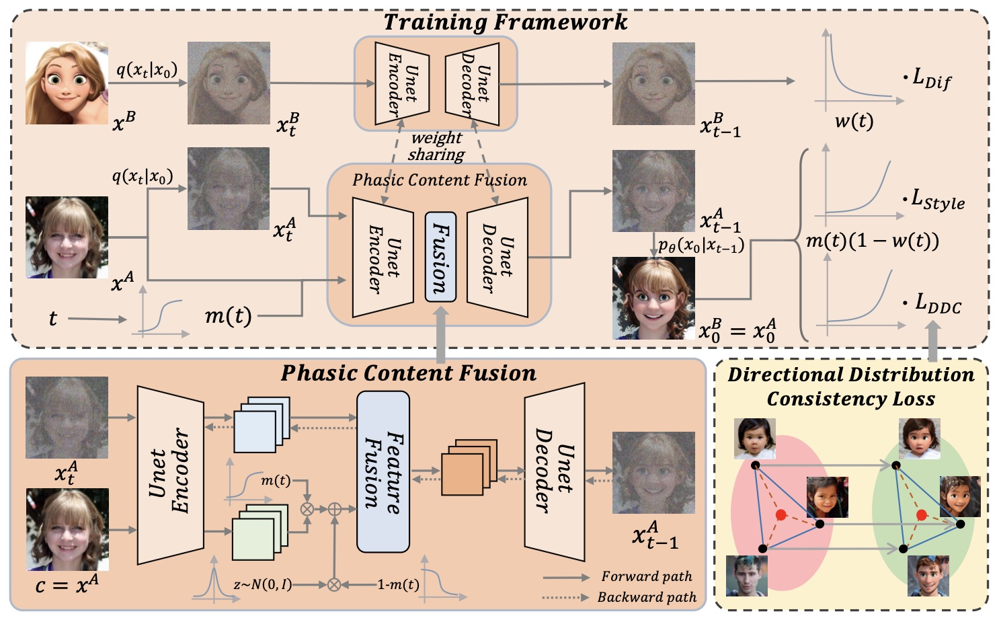
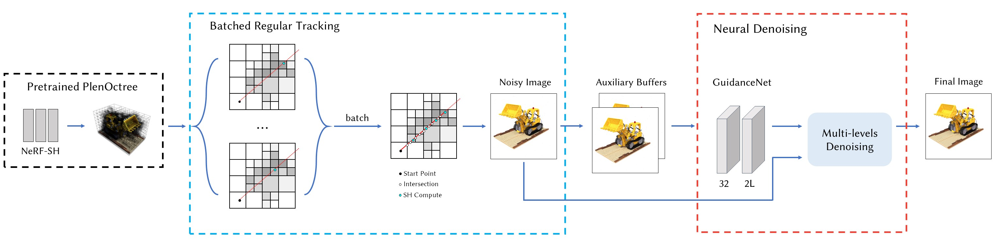
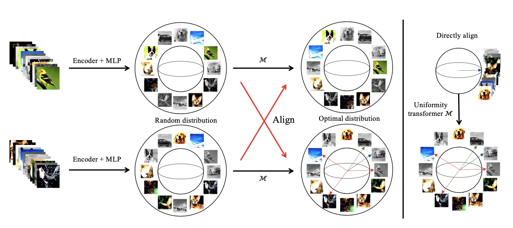
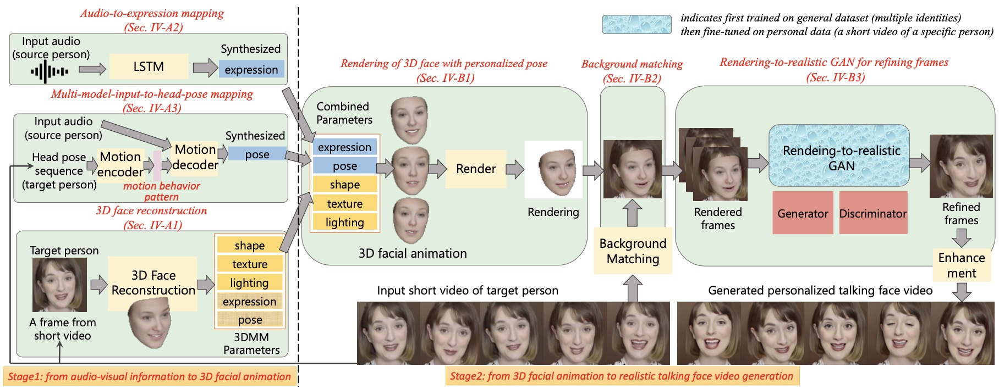
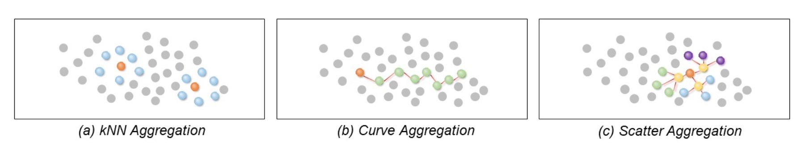

|
Ran Yi (易冉) |
Biography
Ran Yi is an Assistant Professor with Department of Computer Science and Engineering, Shanghai Jiao Tong University, China. She is a member of Digital Media and Computer Vision Laboratory, working closely with Prof. Lizhuang Ma. She received her B.Eng and Ph.D. degree from Tsinghua University, China, in 2016 and 2021 respectively. Her Ph.D advisor is Prof. Yong-Jin Liu, and the lab director is Prof. Shi-Min Hu. She also closely collaborates with Prof. Yu-Kun Lai, Prof. Paul L. Rosin and Prof. Ying He. Her research interests include computer vision, computer graphics and machine intelligence.
[ Research Interests
| Openings
| Publications
| Honors
| Education
| Working
| Teaching
| Activities
]
News
- [2024.02.27] 4 papers accepted by CVPR 2024.
- [2023.12.14] 1 paper accepted by TVCG.
- [2023.12.09] 2 papers accepted by AAAI 2024.
- [2023.08.04] 1 paper conditionally accepted by SIGGRAPH Asia 2023.
- [2023.07.26] 2 papers accepted by ACM MM 2023.
- [2023.07.14] 5 papers accepted by ICCV 2023.
- [2023.05.18] 1 paper accepted by TVCG.
- [2023.04.20] 1 paper accepted by IJCAI 2023.
- [2023.02.28] 3 papers accepted by CVPR 2023.
- [2022.09.13] 1 paper accepted by TMM.
- [2022.07.04] 2 papers accepted by ECCV 2022.
- [2022.06.30] 2 papers accepted by ACM MM 2022.
- [2022.04.26] 1 paper accepted by SIGGRAPH 2022.
- [2022.04.21] 1 paper accepted by IJCAI 2022.
- [2022.03.02] 2 papers accepted by CVPR 2022.
- [2022.01.27] 1 paper accepted by TPAMI.
- [2022.01.08] 1 paper accepted by TMM.
- [2021.12.01] 1 paper accepted by AAAI 2022.
- [2021.11.06] 1 paper accepted by TVCG.
- [2021.07.03] I joined SJTU as an assistant professor.
- [2021.05.18] I passed PhD thesis defense.
- [2021.03.15] 1 paper accepted by TVCG.
- [2020.04.08] 1 paper accepted by TPAMI.
- [2020.03.06] 1 paper accepted by TPAMI.
- [2020.02.24] 1 paper accepted by CVPR 2020.
Research Interests Top
Computer Vision, Computer Graphics.
Some specific research interests:
- Image/video/3D generation
- Artistic portrait stylization
- Rendering quality enhancement
- 3D geometry processing
Openings / Internship Top
I am looking for self-motivated PhD, master and undergraduate students to join my research group! If you are interested in computer vision, computer graphics and want to join us, please send me your CV via email. For more info about internship at our group, please refer to this link.
团队招收博士生，硕士生和对科研感兴趣的本科生！如果你对计算机视觉、计算机图形学感兴趣，希望加入我们团队，欢迎与我邮件联系（邮件请附上个人简历）
Selected Publications
2024
2023
2022
2021
2020
2019
2018
2016
Top
| 2023 | |
|
Towards Artistic Image Aesthetics Assessment: a Large-scale Dataset and a New Method [paper]
[dataset + code]
Ran Yi*, Haoyuan Tian, Zhihao Gu, Yu-Kun Lai, Paul L. Rosin IEEE Conference on Computer Vision and Pattern Recognition (CVPR), 2023 [CCF A] |
|
|  |
Phasic Content Fusing Diffusion Model with Directional Distribution Consistency for Few-Shot Model Adaption
[paper]
[code]
Teng Hu, Jiangning Zhang, Liang Liu, Ran Yi*, Siqi Kou, Haokun Zhu, Xu Chen, Yabiao Wang, Chengjie Wang, Lizhuang Ma IEEE International Conference on Computer Vision (ICCV), 2023 [CCF A] |
|
Complete 3D Relationships Extraction Modality Alignment Network for 3D Dense Captioning
[paper]
Aihua Mao*, Zhi Yang, Wanxin Chen, Ran Yi*, Yong-Jin Liu IEEE Transactions on Visualization and Computer Graphics (TVCG), 2023 [CCF A] |
|
 |
MSL-Net: Sharp Feature Detection Network for 3D Point Clouds
[paper]
Xianhe Jiao, Chenlei Lv, Ran Yi, Junli Zhao, Zhenkuan Pan, Zhongke Wu, Yong-Jin Liu IEEE Transactions on Visualization and Computer Graphics (TVCG), 2024 [CCF A] |
 |
|
 |
Remembering Normality: Memory-guided Knowledge Distillation for Unsupervised Anomaly Detection
[paper]
Zhihao Gu, Liang Liu, Xu Chen, Ran Yi, Jiangning Zhang, Yabiao Wang, Chengjie Wang, Annan Shu, Guannan Jiang, Lizhuang Ma IEEE International Conference on Computer Vision (ICCV), 2023 [CCF A] |
|  | |
 |
|
|  |
EMCLR: Expectation Maximization Contrastive Learning Representations
[paper]
Meng Liu, Ran Yi*, Lizhuang Ma* IEEE International Conference on Acoustics, Speech and Signal Processing (ICASSP), 2022 [CCF B] |
| 2022 | |
 |
Animating Portrait Line Drawings from a Single Face Photo and a Speech Signal [paper]
[code]
[demo video]
Ran Yi, Zipeng Ye, Ruoyu Fan, Yezhi Shu, Yong-Jin Liu, Yu-Kun Lai, Paul L. Rosin ACM SIGGRAPH 2022 Conference Proceedings (SIGGRAPH), 2022 [CCF A] |
 |
|
|  |
Predicting Personalized Head Movement From Short Video and Speech Signal [paper]
[code]
[demo video]
Ran Yi, Zipeng Ye, Zhiyao Sun, Juyong Zhang, Guoxin Zhang, Pengfei Wan, Hujun Bao, Yong-Jin Liu IEEE Transactions on Multimedia (TMM), 2022 [CCF B] |
 |
Audio-Driven Talking Face Video Generation with Dynamic Convolution Kernels [paper]
[demo video]
Zipeng Ye, Mengfei Xia, Ran Yi*, Juyong Zhang, Yu-Kun Lai, Xuwei Huang, Guoxin Zhang, Yong-Jin Liu* IEEE Transactions on Multimedia (TMM), 2022 [CCF B] |
|  |
ScatterNet: Point Cloud Learning via Scatters
[paper]
Qi Liu, Nianjuan Jiang, Jiangbo Lu, Mingang Chen, Ran Yi*, Lizhuang Ma* ACM International Conference on Multimedia (ACM MM), 2022 [CCF A] |
|
ISDNet: Integrating Shallow and Deep Networks for Efficient Ultra-high Resolution Segmentation
[paper]
[code]
Shaohua Guo, Liang Liu, Zhenye Gan, Yabiao Wang, Wuhao Zhang, Chengjie Wang, Guannan Jiang, Wei Zhang, Ran Yi*, Lizhuang Ma*, Ke Xu IEEE Conference on Computer Vision and Pattern Recognition (CVPR), 2022 [CCF A] |
|
|
Exploiting Fine-grained Face Forgery Clues via Progressive Enhancement Learning [paper]
Qiqi Gu, Shen Chen, Taiping Yao, Yang Chen, Shouhong Ding*, Ran Yi* AAAI Conference on Artificial Intelligence (AAAI), 2022 [CCF A] |
|
|
Adaptive Mixture of Experts Learning for Generalizable Face Anti-Spoofing [paper]
Qianyu Zhou, Ke-Yue Zhang, Taiping Yao, Ran Yi, Shouhong Ding, Lizhuang Ma ACM International Conference on Multimedia (ACM MM), 2022 [CCF A] |
|
|
Region-Aware Temporal Inconsistency Learning for DeepFake Video Detection [paper]
Zhihao Gu, Taiping Yao, Yang Chen, Ran Yi, Shouhong Ding, Lizhuang Ma International Joint Conference on Artificial Intelligence (IJCAI), 2022 [CCF A] |
|
|
Generative Domain Adaptation for Face Anti-Spoofing [paper]
Qianyu Zhou, Ke-Yue Zhang, Taiping Yao, Ran Yi, Kekai Sheng, Shouhong Ding, Lizhuang Ma European Conference on Computer Vision (ECCV), 2022 [CCF B] |
|
|
Optimization over Disentangled Encoding: Unsupervised Cross-Domain Point Cloud Completion via Occlusion Factor Manipulation
[paper]
[code]
Jingyu Gong, Fengqi Liu, Jiachen Xu, Min Wang, Xin Tan, Zhizhong Zhang, Ran Yi, Haichuan Song, Yuan Xie, Lizhuang Ma European Conference on Computer Vision (ECCV), 2022 [CCF B] |
|
| 2021 | |
 |
|
| 2020 | |
|
Line Drawings for Face Portraits from Photos using Global and Local Structure based GANs [paper]
[code]
[code (Jittor)]
Ran Yi, Mengfei Xia, Yong-Jin Liu, Yu-Kun Lai, Paul L. Rosin IEEE Transactions on Pattern Analysis and Machine Intelligence (TPAMI), 2020 [CCF A] |
|
|
Unpaired Portrait Drawing Generation via Asymmetric Cycle Mapping [paper]
[code]
[code (Jittor)]
Ran Yi, Yong-Jin Liu, Yu-Kun Lai, Paul L. Rosin IEEE Conference on Computer Vision and Pattern Recognition (CVPR), 2020 [CCF A] |
|
|
Feature-Aware Uniform Tessellations on Video Manifold for Content-Sensitive Supervoxels [paper]
[code]
[demo video]
Ran Yi, Zipeng Ye, Wang Zhao, Minjing Yu, Yu-Kun Lai, Yong-Jin Liu IEEE Transactions on Pattern Analysis and Machine Intelligence (TPAMI), 2020 [CCF A] |
|
 |
Dirichlet energy of Delaunay meshes and intrinsic Delaunay triangulations [paper]
Zipeng Ye, Ran Yi, Wenyong Gong, Ying He, Yong-Jin Liu Computer-Aided Design (CAD), 2020 [CCF B] |
|
Audio-driven Talking Face Video Generation with Learning-based Personalized Head Pose [paper]
[code]
[demo video]
Ran Yi, Zipeng Ye, Juyong Zhang, Hujun Bao, Yong-Jin Liu Arxiv, 2020 |
|
| 2019 | |
 |
APDrawingGAN: Generating Artistic Portrait Drawings from Face Photos with Hierarchical GANs [paper]
[code]
[dataset]
[code (Jittor)]
Ran Yi, Yong-Jin Liu, Yu-Kun Lai, Paul L. Rosin IEEE Conference on Computer Vision and Pattern Recognition (CVPR), 2019 (oral) [CCF A] |
 |
|
| 2018 | |
 |
Delaunay Mesh Simplification with Differential Evolution [paper]
[demo video]
Ran Yi, Yong-Jin Liu, Ying He ACM Transactions on Graphics (SIGGRAPH ASIA), 2018 [CCF A] |
|
Content-Sensitive Supervoxels via Uniform Tessellations on Video Manifolds [paper]
Ran Yi, Yong-Jin Liu, Yu-Kun Lai IEEE Conference on Computer Vision and Pattern Recognition (CVPR), 2018 [CCF A] |
|
| 2016 | |
 |
Manifold Differential Evolution (MDE): A Global Optimization Method for Geodesic Centroidal Voronoi Tessellations on Meshes [paper]
[demo video]
Yong-Jin Liu, Chun-Xu Xu, Ran Yi, Dian Fan, Ying He ACM Transactions on Graphics (SIGGRAPH ASIA), 2016 [CCF A] |
Honors & Awards Top
- 2022年CCF-腾讯犀牛鸟基金卓越项目 (The CCF-Tencent RhinoBird Fund Outstanding Project), 2023.10
- 2023年ACM SIGAI China新星奖 (ACM SIGAI China Rising Star Award), 2023.10
- CAD/Graphics 2023 Best Paper Honorable Mention Award, 2023.8
- 2022年吴文俊人工智能优秀博士学位论文奖 (Wu Wenjun Artificial Intelligence Excellent Doctoral Dissertation), 2023.03
- 入选第八届中国科协青年人才托举工程 (Young Elite Scientists Sponsorship Program by CAST), 2023.02
- 2022年中国图象图形学学会高等教育教学成果奖一等奖，排名5 (The First Prize of Higher Education Teaching Achievement Award of China Society of Image and Graphics in 2022), 2022.11
- 2021年北京市科学技术进步奖二等奖，排名9 (The Second Class of Beijing Science and Technology Progress Award 2021), 2022.11
- 2022年瑞士Chorafas青年研究奖 (The Dimitris N. Chorafas Foundation Young Researcher Award), 2022.7
- 2021年中国图象图形学学会石青云女科学家奖（青英组） (China Society of Image and Graphics Shi QingYun Female Scientist Award (QingYing Group)), 2021.12
- IGTA Paper Competition First Prize, 2021.08
- Beijing Outstanding Graduates, 2021.07
- Excellent Doctoral Dissertation of Beijing Society of Image and Graphics (BSIG), 2021.06
- Excellent Doctoral Dissertation of Tsinghua University, 2021.06
- China National Scholarship, Tsinghua University, 2020.12
- China National Scholarship, Tsinghua University, 2019.12
- CCF-CV 学术新锐奖 (CCF-CV Academic Emerging Award), CCF-CV, 2019.11
- Microsoft Research Asia Fellowship Nomination Award, Microsoft, 2019.11
- China National Scholarship, Tsinghua University, 2018.11
- CCF-CV 学术新锐奖提名, CCF-CV, 2018.10
- Beijing Outstanding Graduates, 2016.06
- Excellent Graduates of Tsinghua University, Tsinghua University, 2016.07
- Excellent Academic Performance Single Scholarship, Tsinghua University, 2015.10
- Excellent Academic Performance Single Scholarship, Tsinghua University, 2014.10
Education Top
2012/08–2016/07: Tsinghua University, EE Dept, Bachelor
2016/09–2021/06: Tsinghua University, CS Dept, PhD
Supervisor: Prof. Yong-Jin Liu
Lab director: Prof. Shi-Min Hu
Working Experience Top
2021/07–Present: Shanghai Jiao Tong University, CSE Dept, Assistant Professor
Courses Top
CS3327 "VR & AR": Spring, Undergraduate Course, with Prof. Sheng Bin [Course Webpage]
CS7332 "Computer Graphics": Spring, Graduate Course, with Prof. Lizhuang Ma
CS4316 "Intelligent Computer Graphics and Vision Applications": Autumn, Undergraduate Course, with Prof. Lizhuang Ma
Activities Top
- Reviewer for Journal: TPAMI, IJCV, TIP, TMM, TVCG, TCSVT, etc
- Reviewer for Conference: CVPR, ICCV, SIGGRAPH, SIGGRAPH Asia, AAAI, NeurIPS, ICML, ICLR, VR, etc